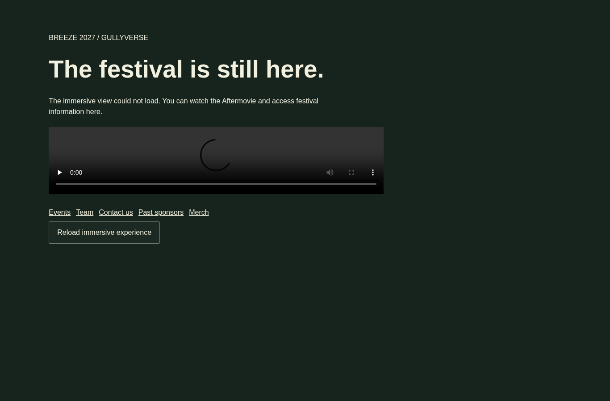
screenshots/critical-asset-fallback.pngSupplemental actual browser evidence; see raw test/capture JSON. No camera pose measurement available for separate-page/fallback captures.
Camera: unmeasured / not applicable (fallback)Original PNG
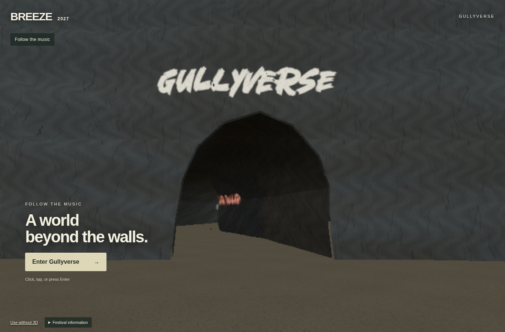
screenshots/desktop/01-landing.pngFresh-session landing; actual entry composition.
Camera {"x":0,"y":1.72,"z":11.5,"yaw":0,"pitch":0.15,"fov":58} | 1366×900 requestedDPR0.5 effectiveDPR0.5 tier0Original PNG
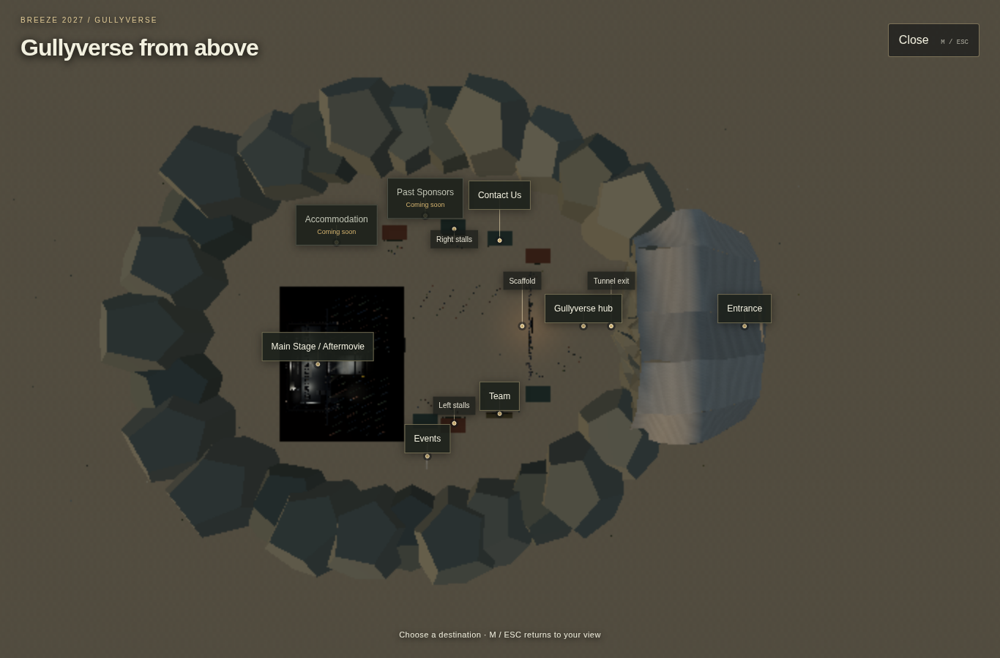
screenshots/desktop/aerial-map.pngPublic full-screen actual-world aerial map.
Camera {"x":-0.8999999999999986,"y":165.93367317635833,"z":-77,"yaw":-1.570760033104047,"pitch":-1.5707963267948966,"fov":64.00036968449932} | 1366×900 requestedDPR0.5 effectiveDPR0.5 tier1Original PNG
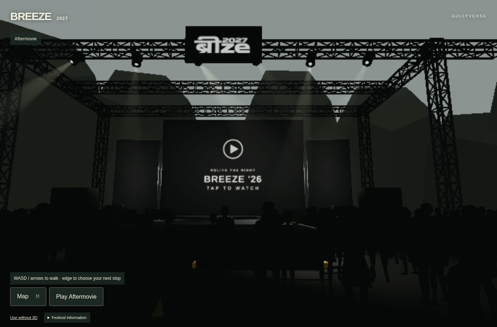
screenshots/desktop/aftermovie-arrival.pngPublic map destination; crowd, stage and retained local ground.
Camera {"x":-10.5,"y":1.72,"z":-110.8,"yaw":0,"pitch":0.16,"fov":58} | 1366×900 requestedDPR0.5 effectiveDPR0.5 tier3Original PNG
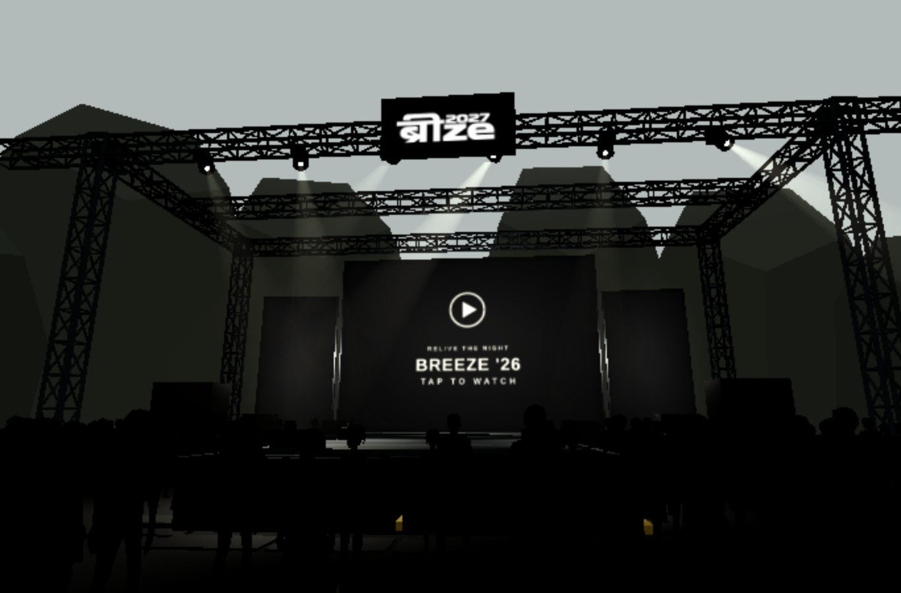
screenshots/desktop/aftermovie-stage-front.pngRegistered stage front camera.
Camera {"x":-10.5,"y":1.72,"z":-110.8,"yaw":0.08550529367820457,"pitch":0.23363839418518068,"fov":58} | 1366×900 requestedDPR0.5 effectiveDPR0.5 tier3Original PNG
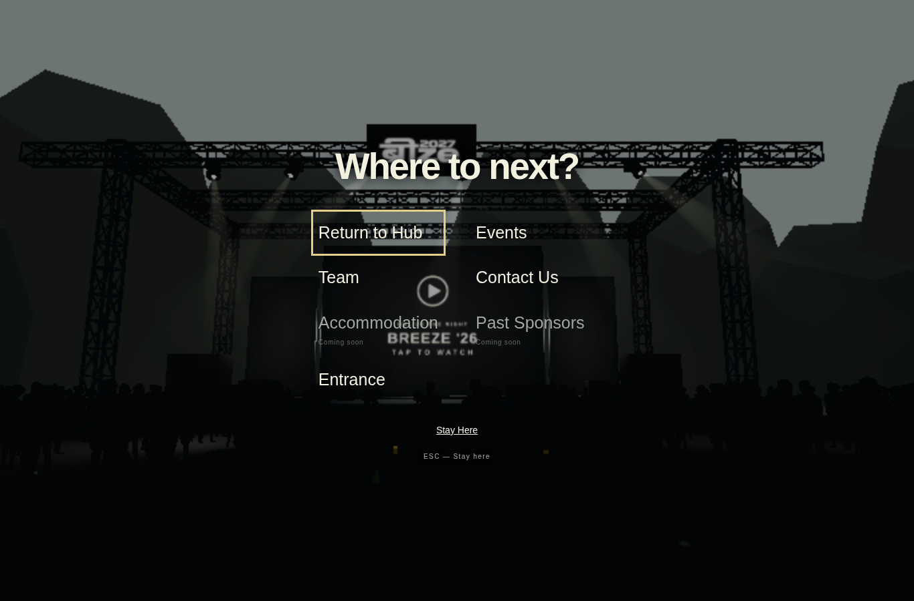
screenshots/desktop/boundary-menu.pngPublic walking hits expanded rear boundary; direct text over scene.
Camera {"x":-10.5,"y":1.72,"z":-105.67999999999999,"yaw":0,"pitch":0.16,"fov":58} | 1366×900 requestedDPR0.5 effectiveDPR0.5 tier3Original PNG
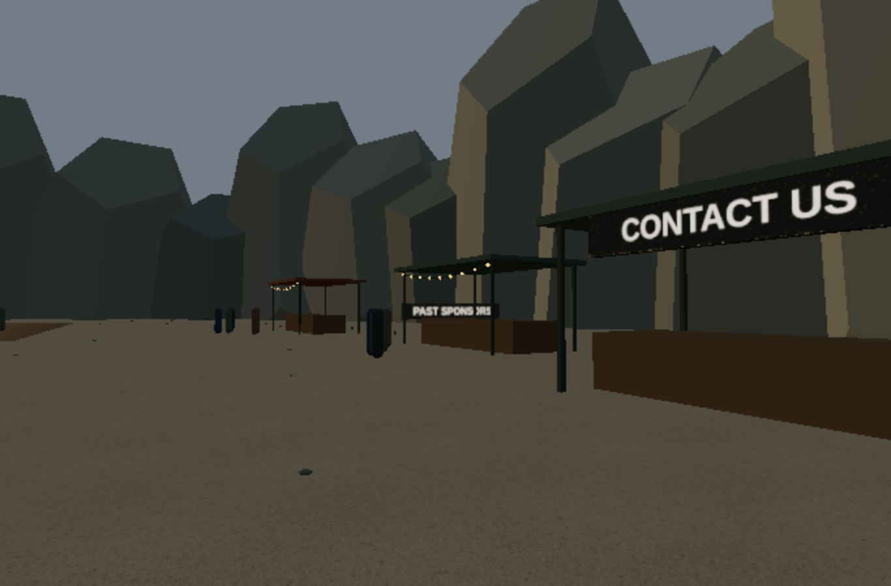
screenshots/desktop/contact-stall.pngExisting registry right-stalls composition. Team/Contact are procedural spatial reservations; this is not a completed interactive board or form.
Camera {"x":17.4,"y":1.72,"z":-72.55,"yaw":-0.541893700676841,"pitch":0.027500228761365767,"fov":58} | 1366×900 requestedDPR0.5 effectiveDPR0.5 tier0Original PNG
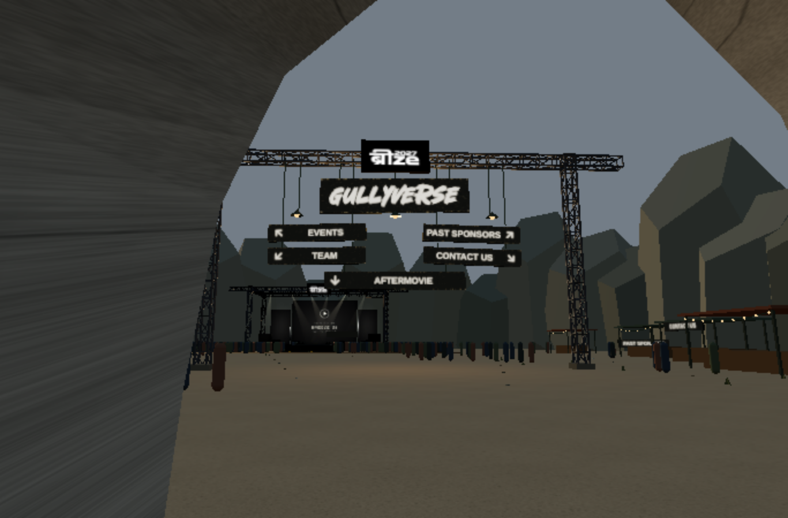
screenshots/desktop/exit.pngExisting registry inspection view; UI remains otherwise unaltered.
Camera {"x":-1.3,"y":1.72,"z":-38,"yaw":-0.040602673065018385,"pitch":0.17552851859732682,"fov":58} | 1366×900 requestedDPR0.5 effectiveDPR0.5 tier0Original PNG
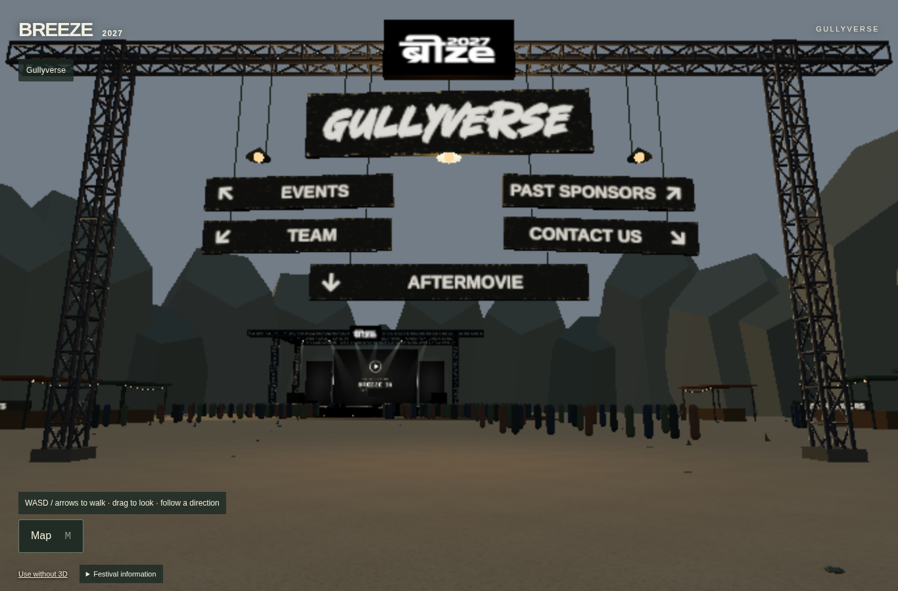
screenshots/desktop/hub-arrival.pngPublic entrance completed; current walking spawn.
Camera {"x":0,"y":1.72,"z":-51,"yaw":0,"pitch":0.2,"fov":58} | 1366×900 requestedDPR0.5 effectiveDPR0.5 tier0Original PNG
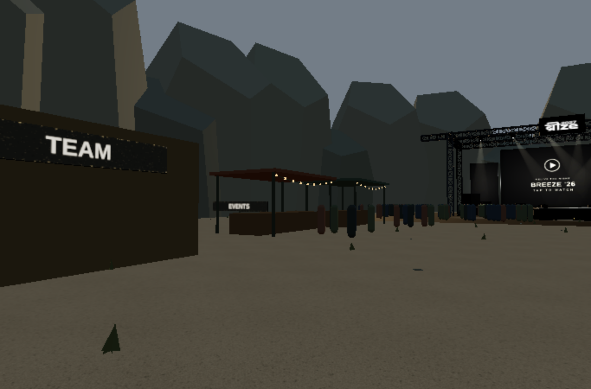
screenshots/desktop/left-stalls.pngExisting registry inspection view; UI remains otherwise unaltered.
Camera {"x":-18,"y":1.72,"z":-72.55,"yaw":0.541893700676841,"pitch":0.027500228761365767,"fov":58} | 1366×900 requestedDPR0.5 effectiveDPR0.5 tier0Original PNG
screenshots/desktop/live-first-reveal.pngLive user-activated cinematic; camera may advance during screenshot acquisition (both poses recorded).
Camera {"x":0,"y":1.72,"z":-51,"yaw":0,"pitch":0.2,"fov":58} | 1366×900 requestedDPR0.5 effectiveDPR0.5 tier0Original PNG
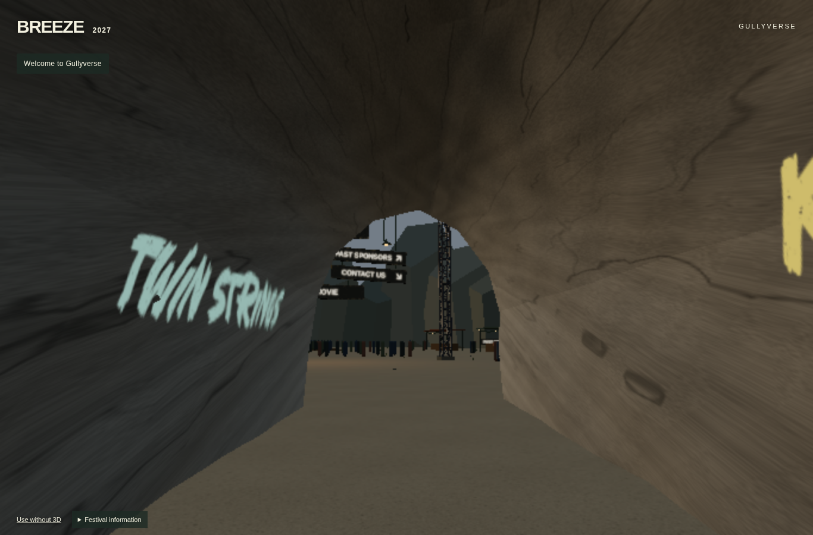
screenshots/desktop/live-tunnel-beginning.pngLive user-activated cinematic; camera may advance during screenshot acquisition (both poses recorded).
Camera {"x":-1.7180945384798998,"y":1.72,"z":-6.247616503563272,"yaw":0.2677832571948573,"pitch":0.15,"fov":58} | 1366×900 requestedDPR0.5 effectiveDPR0.5 tier0Original PNG
screenshots/desktop/live-tunnel-exit.pngLive user-activated cinematic; camera may advance during screenshot acquisition (both poses recorded).
Camera {"x":0,"y":1.72,"z":-51,"yaw":0,"pitch":0.2,"fov":58} | 1366×900 requestedDPR0.5 effectiveDPR0.5 tier0Original PNG
screenshots/desktop/live-tunnel-midpoint.pngLive user-activated cinematic; camera may advance during screenshot acquisition (both poses recorded).
Camera {"x":0,"y":1.72,"z":-47.44297291289039,"yaw":-0.00044284891129098476,"pitch":0.19337783152516655,"fov":58} | 1366×900 requestedDPR0.5 effectiveDPR0.5 tier0Original PNG
screenshots/desktop/map-ascent-intermediate.pngPublic map ascent, actual camera and progress recorded.
Camera {"x":-0.580049412307593,"y":147.05227106701957,"z":-67.75698302221937,"yaw":-1.0123538156425103,"pitch":-1.0728123179111289,"fov":61.867234343469036} | 1366×900 requestedDPR0.5 effectiveDPR0.5 tier1Original PNG
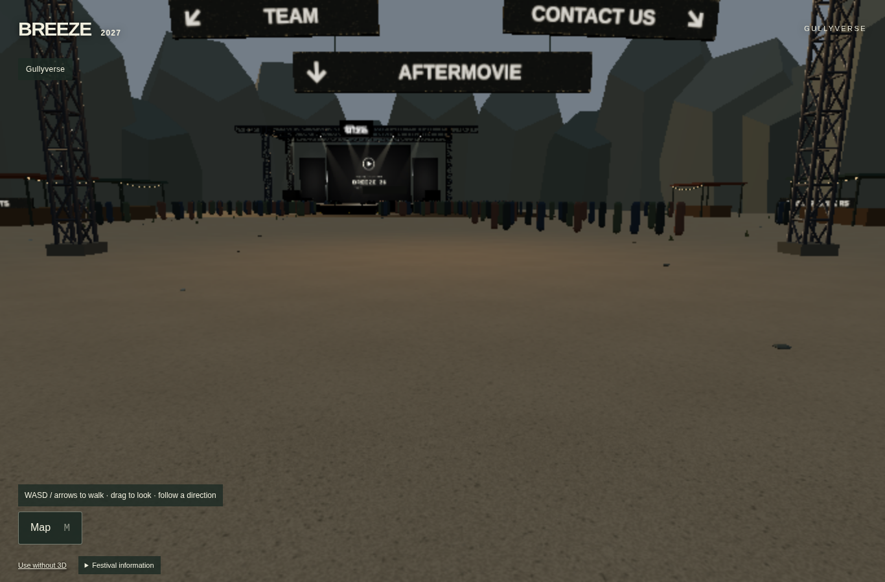
screenshots/desktop/map-descent-intermediate.pngPublic map descent, actual camera and progress recorded.
Camera {"x":-0.4061256866164151,"y":112.12963585888045,"z":-62.73251983558534,"yaw":-0.7088066632822279,"pitch":-0.8021104111437006,"fov":60.70767139785512} | 1366×900 requestedDPR0.5 effectiveDPR0.5 tier1Original PNG
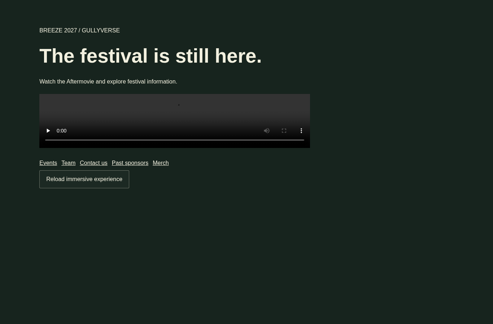
screenshots/desktop/native-fallback.pngSupplemental actual browser evidence; see raw test/capture JSON. No camera pose measurement available for separate-page/fallback captures.
Camera: unmeasured / not applicable (fallback)Original PNG
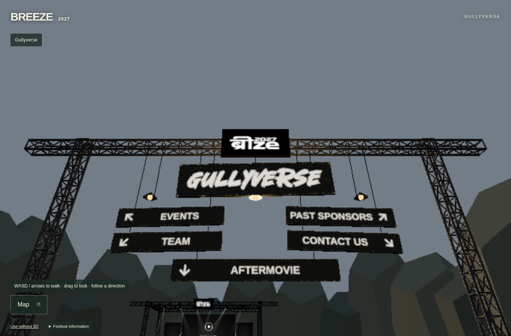
screenshots/desktop/quarry-open-roof.pngPublic pointer look upward from hub; bounded pitch.
Camera {"x":0,"y":1.72,"z":-51,"yaw":0,"pitch":0.55,"fov":58} | 1366×900 requestedDPR0.5 effectiveDPR0.5 tier1Original PNG
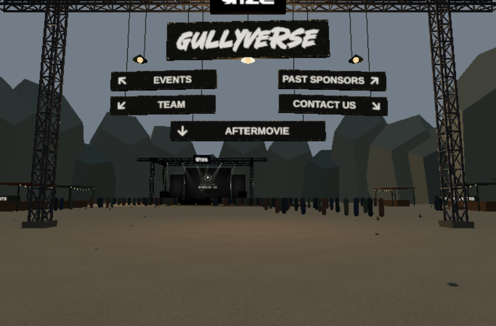
screenshots/desktop/quarry.pngExisting registry inspection view; UI remains otherwise unaltered.
Camera {"x":0,"y":1.72,"z":-51,"yaw":0,"pitch":0.11649649406590151,"fov":58} | 1366×900 requestedDPR0.5 effectiveDPR0.5 tier0Original PNG
 screenshots/desktop/right-stalls.png
screenshots/desktop/right-stalls.pngExisting registry inspection view; UI remains otherwise unaltered.
Camera {"x":17.4,"y":1.72,"z":-72.55,"yaw":-0.541893700676841,"pitch":0.027500228761365767,"fov":58} | 1366×900 requestedDPR0.5 effectiveDPR0.5 tier0Original PNG
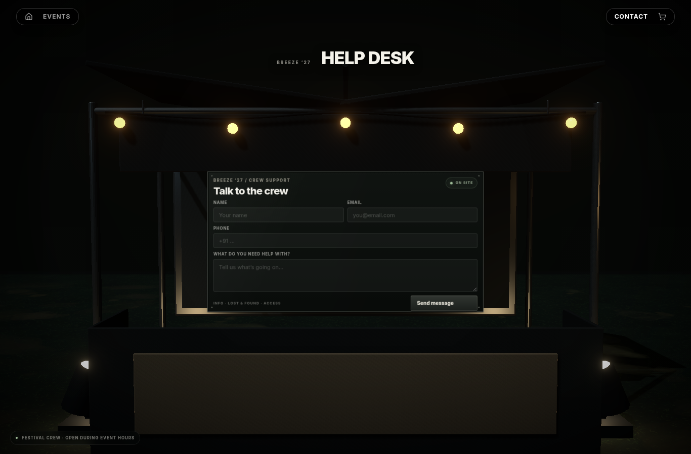
screenshots/desktop/route-contact.pngSupplemental actual browser evidence; see raw test/capture JSON. No camera pose measurement available for separate-page/fallback captures.
Camera: unmeasured / not applicable (fallback)Original PNG
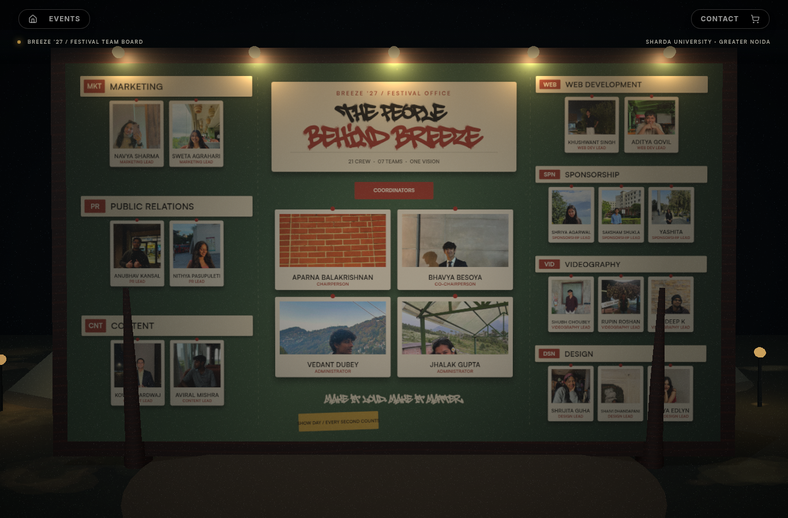
screenshots/desktop/route-team.pngSupplemental actual browser evidence; see raw test/capture JSON. No camera pose measurement available for separate-page/fallback captures.
Camera: unmeasured / not applicable (fallback)Original PNG
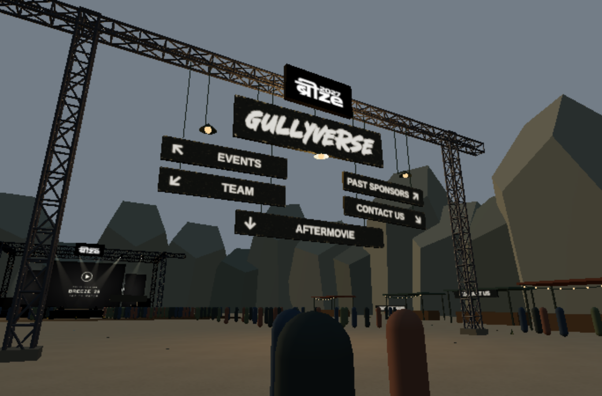
screenshots/desktop/scaffold-diagonal.pngExisting registry inspection view; UI remains otherwise unaltered.
Camera {"x":-10,"y":1.72,"z":-52,"yaw":-0.507098504392337,"pitch":0.2960227572727301,"fov":58} | 1366×900 requestedDPR0.5 effectiveDPR0.5 tier0Original PNG
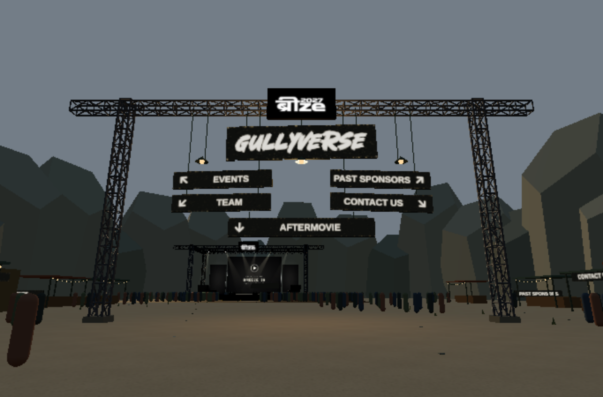
screenshots/desktop/scaffold-front.pngExisting registry inspection view; UI remains otherwise unaltered.
Camera {"x":0,"y":1.72,"z":-46,"yaw":0,"pitch":0.2559285578951724,"fov":58} | 1366×900 requestedDPR0.5 effectiveDPR0.5 tier0Original PNG
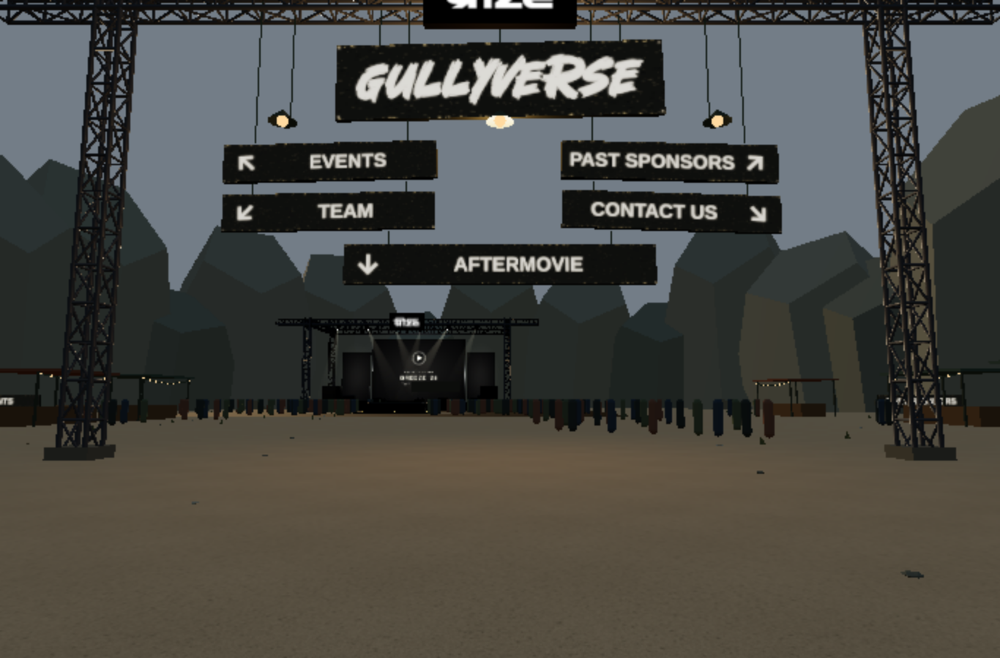
screenshots/desktop/stage-from-hub.pngExisting registry quarry composition. Team/Contact are procedural spatial reservations; this is not a completed interactive board or form.
Camera {"x":0,"y":1.72,"z":-51,"yaw":0,"pitch":0.11649649406590151,"fov":58} | 1366×900 requestedDPR0.5 effectiveDPR0.5 tier0Original PNG
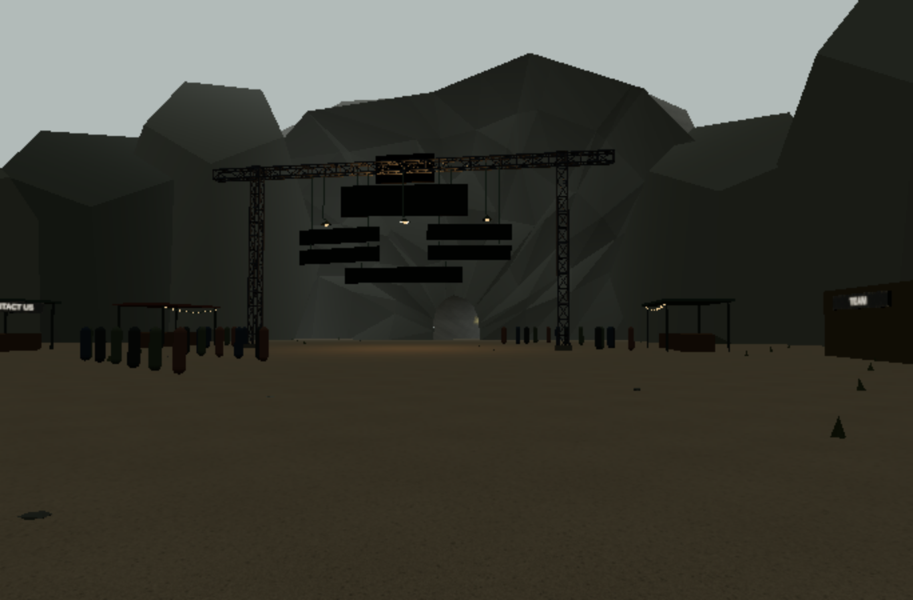
screenshots/desktop/stage-ground-transition.pngLocked stage floor, fog and quarry integration review.
Camera {"x":-10.5,"y":1.72,"z":-108.3,"yaw":-2.9845260926263544,"pitch":0.04882428111600402,"fov":58} | 1366×900 requestedDPR0.5 effectiveDPR0.5 tier3Original PNG
 screenshots/desktop/stage-looking-back.png
screenshots/desktop/stage-looking-back.pngRegistered rear quarry view, latest tunnel crown and preserved open sightline.
Camera {"x":-10.5,"y":1.72,"z":-108.3,"yaw":-2.9845260926263544,"pitch":0.04882428111600402,"fov":58} | 1366×900 requestedDPR0.5 effectiveDPR0.5 tier3Original PNG
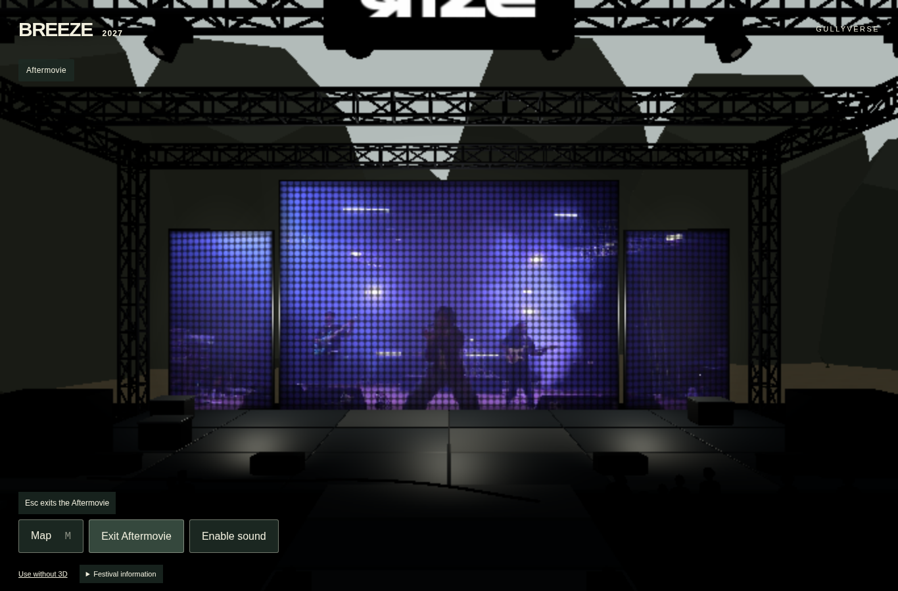
screenshots/desktop/stage-playback.pngActual original movie on shared LED video texture; playback camera.
Camera {"x":-12,"y":5.9,"z":-117.30000000000001,"yaw":0,"pitch":0,"fov":58} | 1366×900 requestedDPR0.5 effectiveDPR0.5 tier3Original PNG
screenshots/desktop/team-board.pngExisting registry left-stalls composition. Team/Contact are procedural spatial reservations; this is not a completed interactive board or form.
Camera {"x":-18,"y":1.72,"z":-72.55,"yaw":0.541893700676841,"pitch":0.027500228761365767,"fov":58} | 1366×900 requestedDPR0.5 effectiveDPR0.5 tier0Original PNG
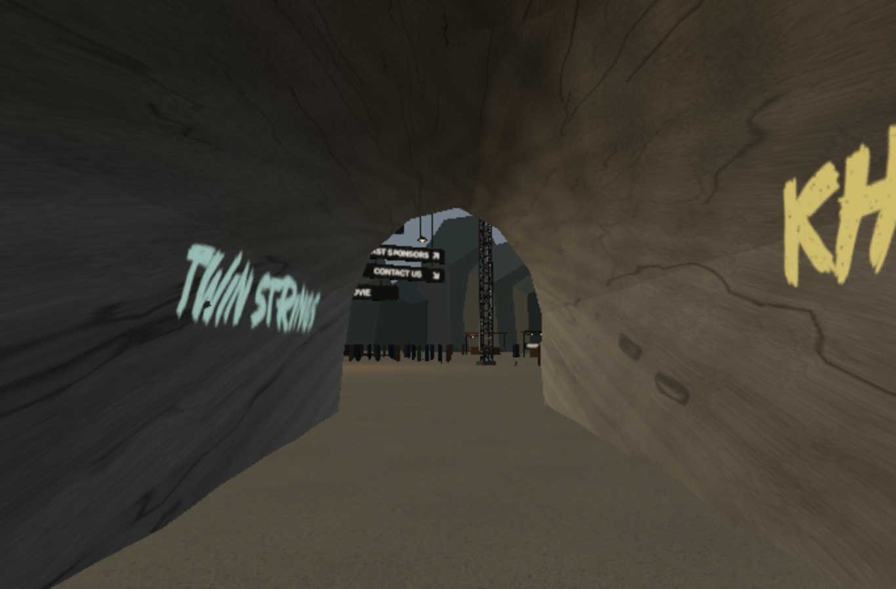
screenshots/desktop/tunnel-first-exit-reveal.pngExisting registry inspection view; UI remains otherwise unaltered.
Camera {"x":-4.64,"y":1.72,"z":-28,"yaw":-0.32003529021261234,"pitch":0.0932947745942283,"fov":58} | 1366×900 requestedDPR0.5 effectiveDPR0.5 tier0Original PNG
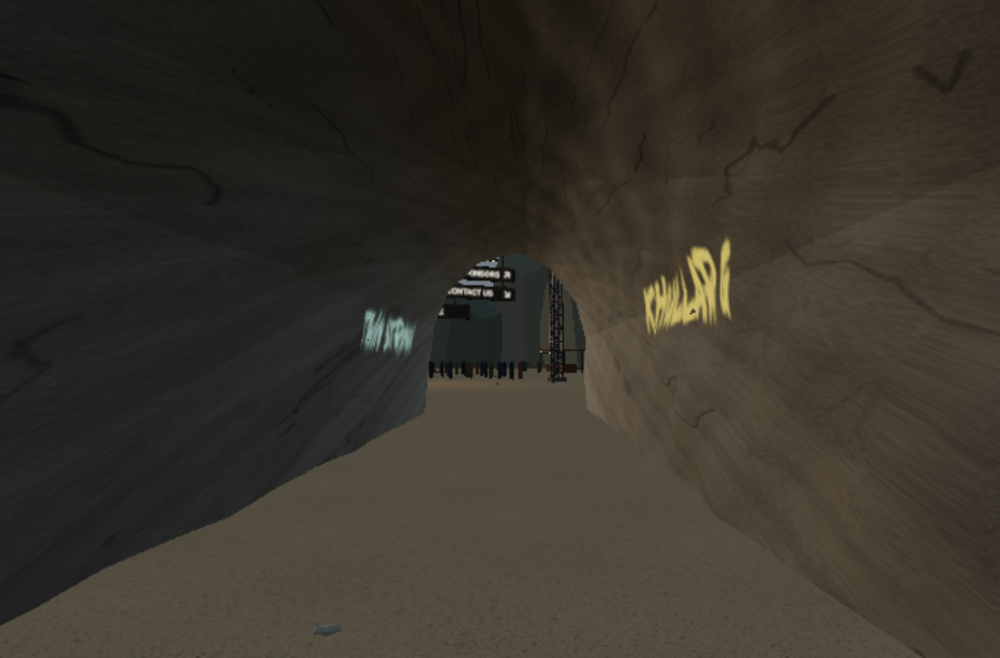
screenshots/desktop/tunnel-mid.pngExisting registry inspection view; UI remains otherwise unaltered.
Camera {"x":-6,"y":1.72,"z":-22,"yaw":-0.27609701939543646,"pitch":0.054466590134463616,"fov":58} | 1366×900 requestedDPR0.5 effectiveDPR0.5 tier0Original PNG
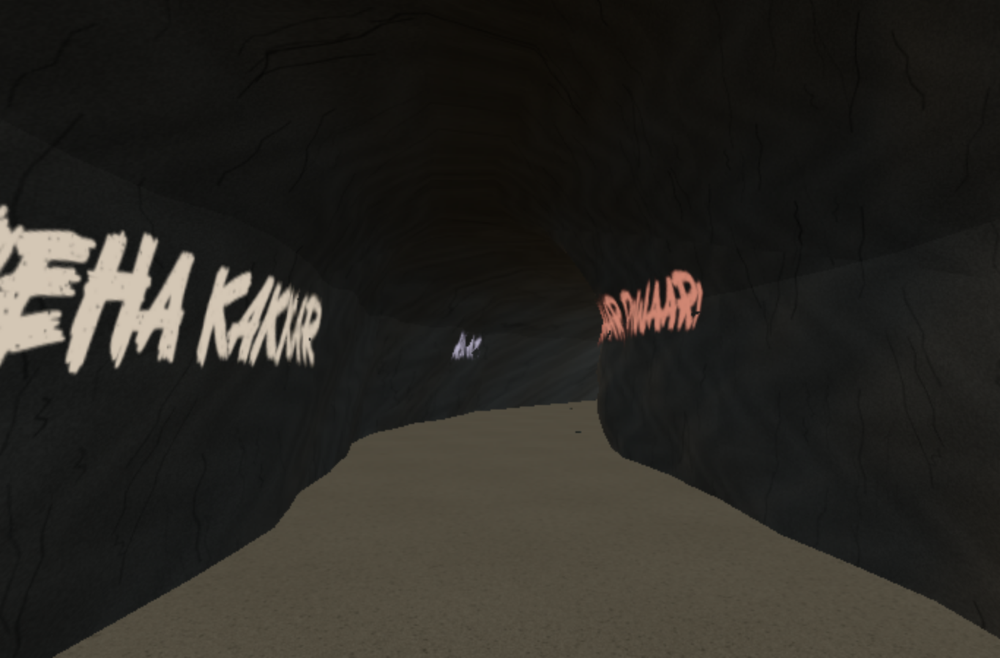
screenshots/desktop/tunnel-near.pngExisting registry inspection view; UI remains otherwise unaltered.
Camera {"x":-0.825,"y":1.72,"z":-3,"yaw":0.33914730785814784,"pitch":0.060698948452435945,"fov":58} | 1366×900 requestedDPR0.5 effectiveDPR0.5 tier0Original PNG
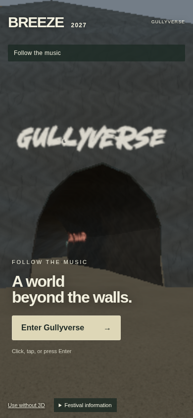
screenshots/mobile/01-landing.pngFresh-session landing; actual entry composition.
Camera {"x":0,"y":1.72,"z":11.5,"yaw":0,"pitch":0.15,"fov":79.43425835096338} | 390×844 requestedDPR0.5 effectiveDPR0.5 tier1Original PNG
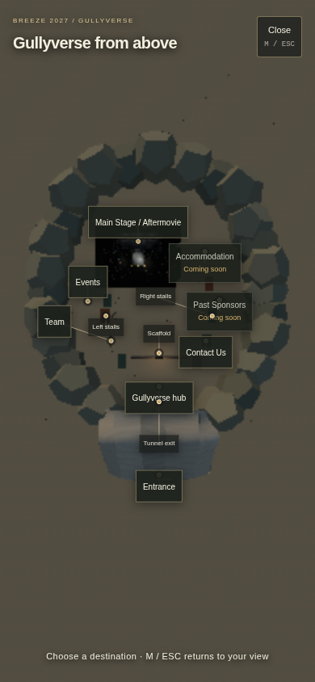
screenshots/mobile/aerial-map.pngPublic full-screen actual-world aerial map.
Camera {"x":-0.8999999999999986,"y":233.84848243444554,"z":-77,"yaw":0,"pitch":-1.5707963267948966,"fov":80} | 390×844 requestedDPR0.5 effectiveDPR0.5 tier1Original PNG
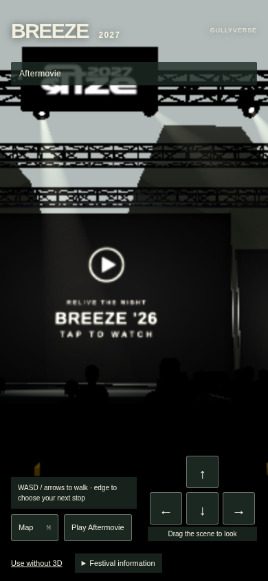
screenshots/mobile/aftermovie-arrival.pngPublic map destination; crowd, stage and retained local ground.
Camera {"x":-10.5,"y":1.72,"z":-110.8,"yaw":0,"pitch":0.16,"fov":58} | 390×844 requestedDPR0.5 effectiveDPR0.5 tier3Original PNG
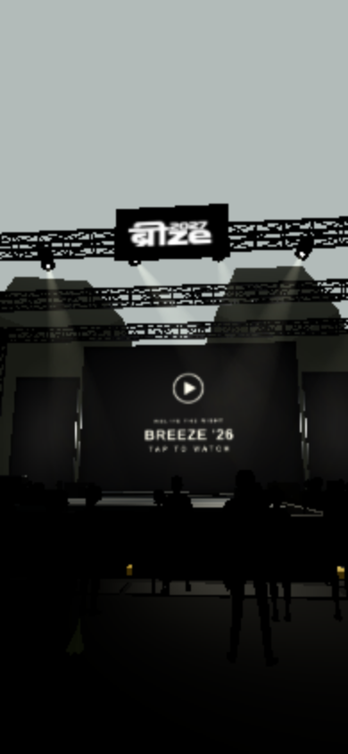
screenshots/mobile/aftermovie-stage-front.pngRegistered stage front camera.
Camera {"x":-10.5,"y":1.72,"z":-110.8,"yaw":0.08550529367820457,"pitch":0.23363839418518068,"fov":79.43425835096338} | 390×844 requestedDPR0.5 effectiveDPR0.5 tier3Original PNG
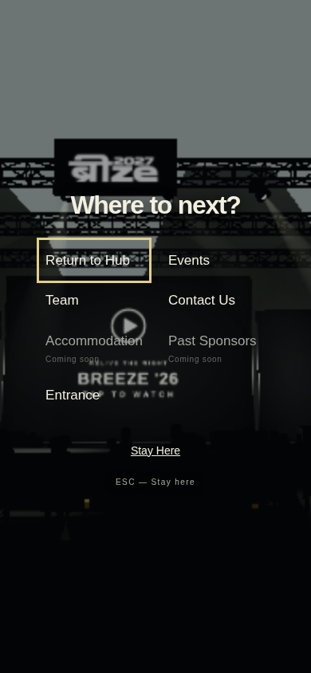
screenshots/mobile/boundary-menu.pngPublic walking hits expanded rear boundary; direct text over scene.
Camera {"x":-10.5,"y":1.72,"z":-105.67999999999999,"yaw":0,"pitch":0.16,"fov":58} | 390×844 requestedDPR0.5 effectiveDPR0.5 tier3Original PNG
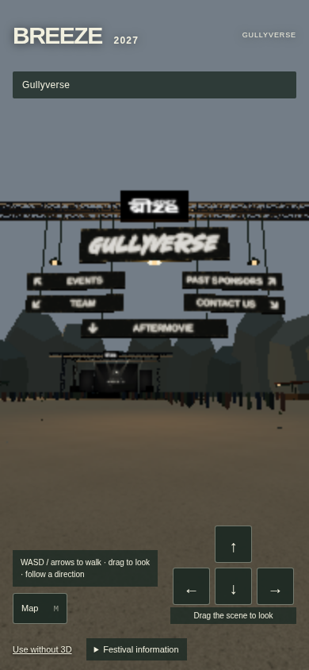
screenshots/mobile/hub-arrival.pngPublic entrance completed; current walking spawn.
Camera {"x":0,"y":1.72,"z":-51,"yaw":0,"pitch":0.2,"fov":100.36920599534565} | 390×844 requestedDPR0.5 effectiveDPR0.5 tier1Original PNG
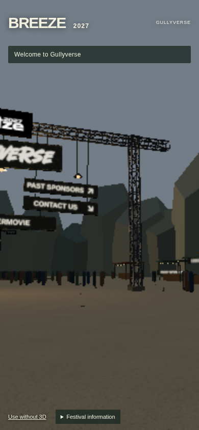
screenshots/mobile/live-first-reveal.pngLive user-activated cinematic; camera may advance during screenshot acquisition (both poses recorded).
Camera {"x":-1.5857712669748567,"y":1.72,"z":-37.12070379392352,"yaw":-0.31509395031444365,"pitch":0.1546679056661546,"fov":66.97983708810015} | 390×844 requestedDPR0.5 effectiveDPR0.5 tier1Original PNG
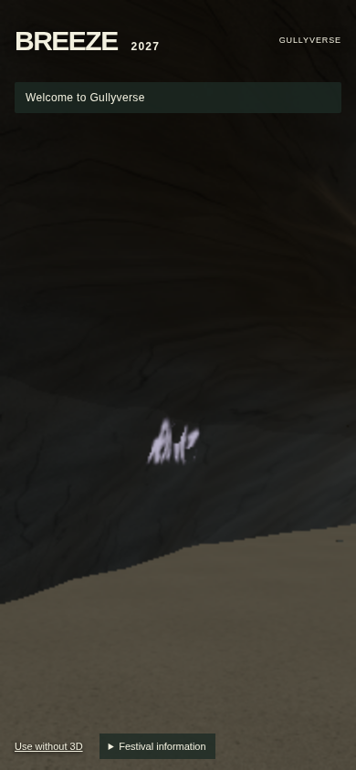
screenshots/mobile/live-tunnel-beginning.pngLive user-activated cinematic; camera may advance during screenshot acquisition (both poses recorded).
Camera {"x":-1.304065549736435,"y":1.72,"z":-4.742056544496127,"yaw":0.2663517482126696,"pitch":0.15,"fov":66.97983708810015} | 390×844 requestedDPR0.5 effectiveDPR0.5 tier1Original PNG
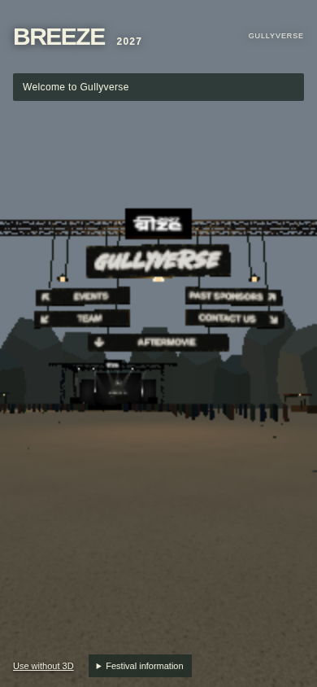
screenshots/mobile/live-tunnel-exit.pngLive user-activated cinematic; camera may advance during screenshot acquisition (both poses recorded).
Camera {"x":0,"y":1.72,"z":-45.66877372036387,"yaw":-0.007951633125557755,"pitch":0.18831590252195876,"fov":87.61356146460218} | 390×844 requestedDPR0.5 effectiveDPR0.5 tier1Original PNG
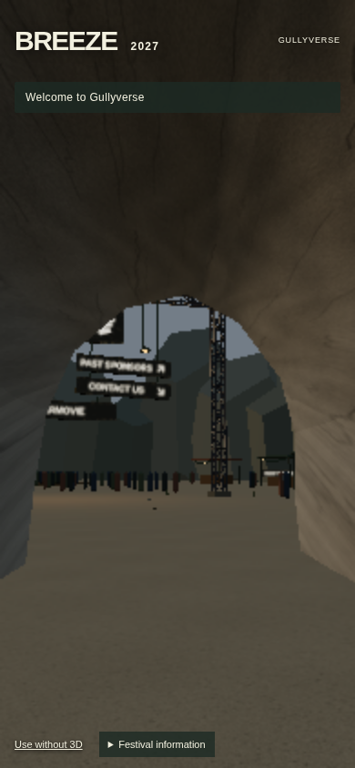
screenshots/mobile/live-tunnel-midpoint.pngLive user-activated cinematic; camera may advance during screenshot acquisition (both poses recorded).
Camera {"x":-6,"y":1.72,"z":-22.205098663623716,"yaw":0.0036780516884641345,"pitch":0.15,"fov":66.97983708810015} | 390×844 requestedDPR0.5 effectiveDPR0.5 tier1Original PNG
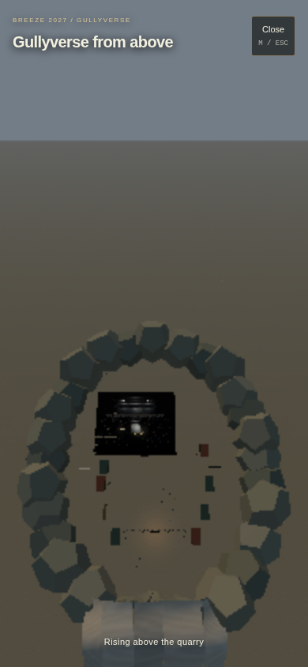
screenshots/mobile/map-ascent-intermediate.pngPublic map ascent, actual camera and progress recorded.
Camera {"x":-0.2158209603498532,"y":90.34103863552367,"z":-57.23482774344021,"yaw":0,"pitch":-0.2246388487031863,"fov":95.48464866259066} | 390×844 requestedDPR0.5 effectiveDPR0.5 tier1Original PNG
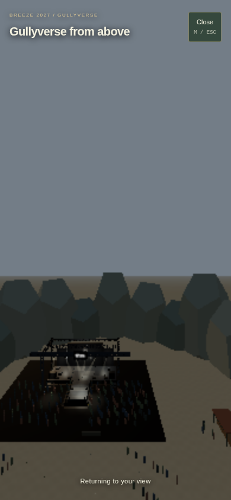
screenshots/mobile/map-descent-intermediate.pngPublic map descent, actual camera and progress recorded.
Camera {"x":-0.64452448111199,"y":220.78762973531735,"z":-69.61959612101307,"yaw":0,"pitch":-1.068135092980556,"fov":85.78203718999741} | 390×844 requestedDPR0.5 effectiveDPR0.5 tier1Original PNG
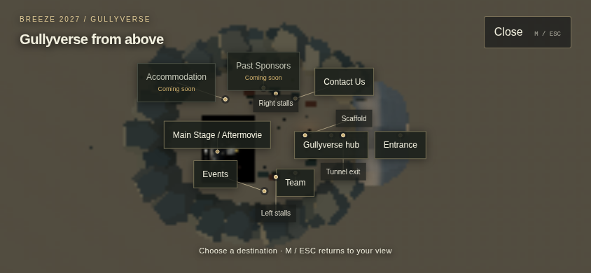
screenshots/mobile/orientation-landscape-map.pngSupplemental actual browser evidence; see raw test/capture JSON. No camera pose measurement available for separate-page/fallback captures.
Camera: unmeasured / not applicable (fallback)Original PNG
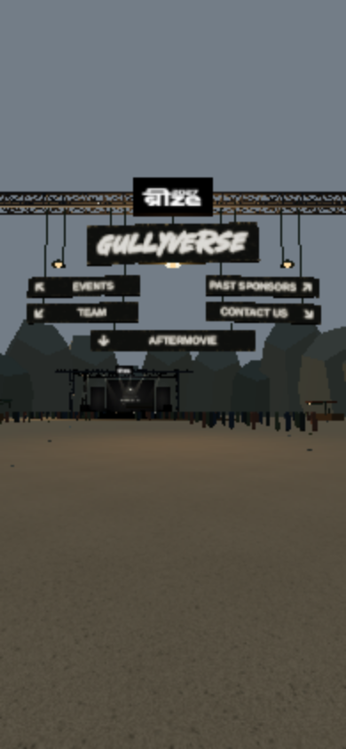
screenshots/mobile/quarry.pngExisting registry inspection view; UI remains otherwise unaltered.
Camera {"x":0,"y":1.72,"z":-51,"yaw":0,"pitch":0.11649649406590151,"fov":100.36920599534565} | 390×844 requestedDPR0.5 effectiveDPR0.5 tier1Original PNG
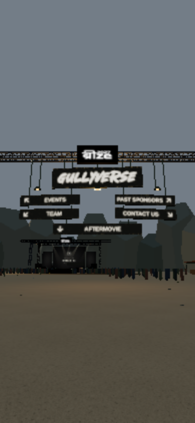
screenshots/mobile/scaffold-front.pngExisting registry inspection view; UI remains otherwise unaltered.
Camera {"x":0,"y":1.72,"z":-46,"yaw":0,"pitch":0.2559285578951724,"fov":88.7706475853118} | 390×844 requestedDPR0.5 effectiveDPR0.5 tier1Original PNG
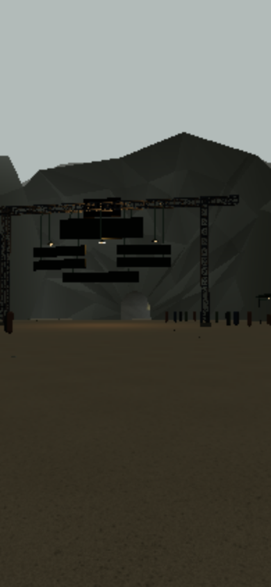
screenshots/mobile/stage-looking-back.pngRegistered rear quarry view, latest tunnel crown and preserved open sightline.
Camera {"x":-10.5,"y":1.72,"z":-108.3,"yaw":-2.9845260926263544,"pitch":0.04882428111600402,"fov":79.43425835096338} | 390×844 requestedDPR0.5 effectiveDPR0.5 tier3Original PNG
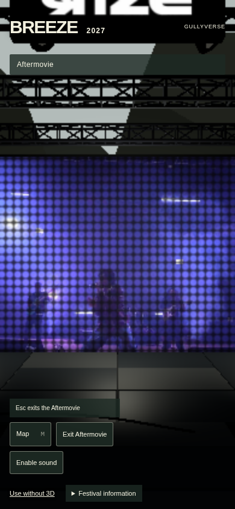
screenshots/mobile/stage-playback.pngActual original movie on shared LED video texture; playback camera.
Camera {"x":-12,"y":5.9,"z":-117.30000000000001,"yaw":0,"pitch":0,"fov":58} | 390×844 requestedDPR0.5 effectiveDPR0.5 tier3Original PNG
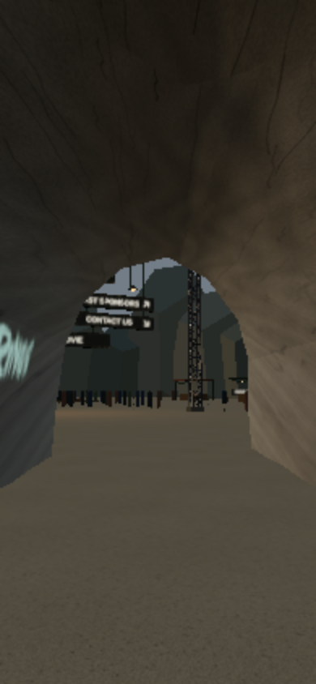
screenshots/mobile/tunnel-first-exit-reveal.pngExisting registry inspection view; UI remains otherwise unaltered.
Camera {"x":-4.64,"y":1.72,"z":-28,"yaw":-0.32003529021261234,"pitch":0.0932947745942283,"fov":66.97983708810015} | 390×844 requestedDPR0.5 effectiveDPR0.5 tier1Original PNG
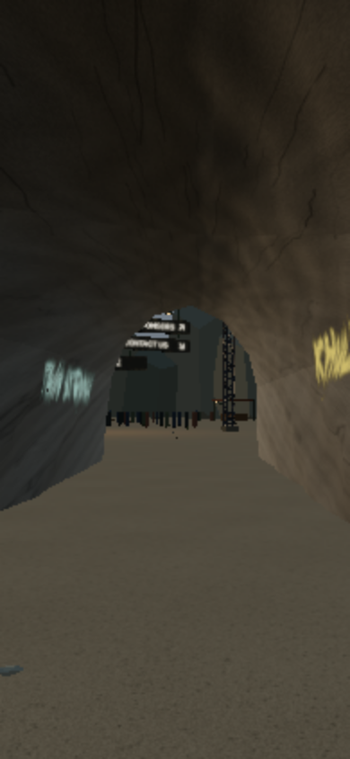
screenshots/mobile/tunnel-mid.pngExisting registry inspection view; UI remains otherwise unaltered.
Camera {"x":-6,"y":1.72,"z":-22,"yaw":-0.27609701939543646,"pitch":0.054466590134463616,"fov":66.97983708810015} | 390×844 requestedDPR0.5 effectiveDPR0.5 tier1Original PNG
Recorded visitor journey and trace
Original actual browser recording. Begins with public landing → tunnel → hub → forward walk → stage → movie → Esc → boundary → return → map. Later sections use explicitly seeded perimeter fixtures. Tracing/recording slows software rendering; not a performance benchmark. See visitor.json for recorded route failure.
Full Playwright trace · Navigation trace summary · Public journey and perimeter results · Unrecorded route follow-up
Measured lifecycle and frame intervals
Previously matched tunnel-exit correction (historical)
These historical before/after frames establish the correction already present at review start. Today's stage rear uses its registered review pose; different pose/DPR comparisons are qualitative, not pixel identity claims.
 Prior matched desktop tunnel correction: baseline. These images were created before this review; metadata retained under historical/tunnel-exit-comparison.
Prior matched desktop tunnel correction: baseline. These images were created before this review; metadata retained under historical/tunnel-exit-comparison.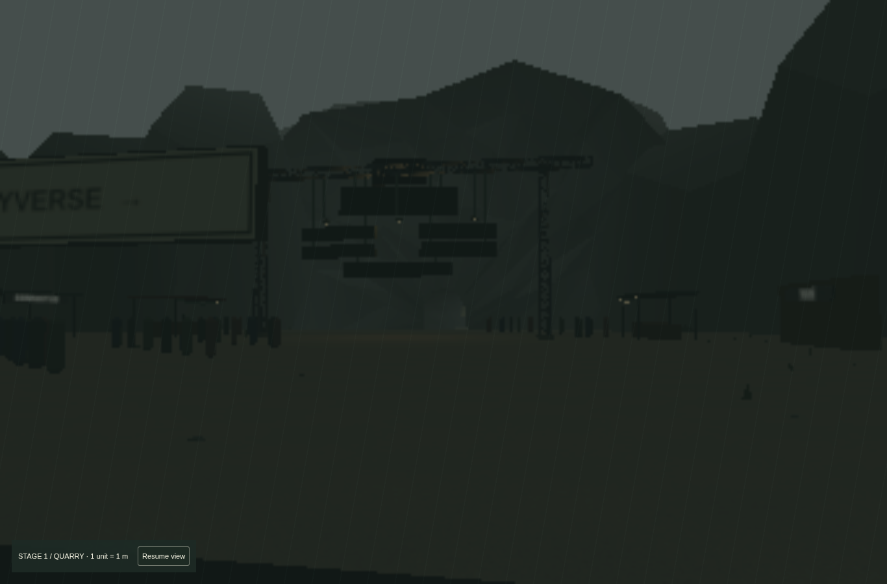
Prior matched desktop tunnel correction: acceptance. These images were created before this review; metadata retained under historical/tunnel-exit-comparison.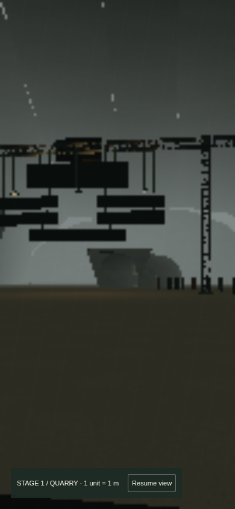
Prior matched mobile tunnel correction: baseline. These images were created before this review; metadata retained under historical/tunnel-exit-comparison. Prior matched mobile tunnel correction: acceptance. These images were created before this review; metadata retained under historical/tunnel-exit-comparison.
Prior matched mobile tunnel correction: acceptance. These images were created before this review; metadata retained under historical/tunnel-exit-comparison.Original references and earlier implementation
Current user-approved appearance overrides these older images. The old extra signs/lighting/layout are not mandatory restoration targets.
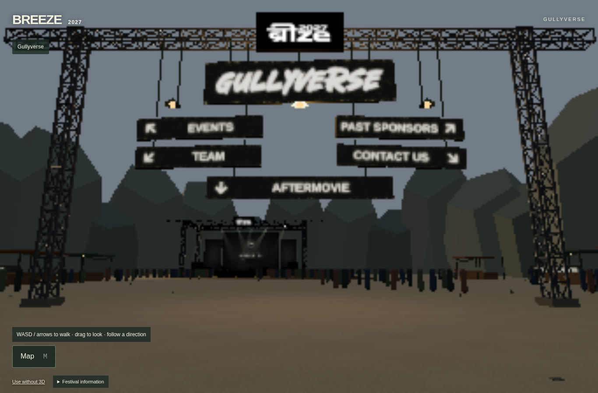
Historical/reference — 05-desktop-hub-arrival-board.png. Inspiration or older capture, not current implementation.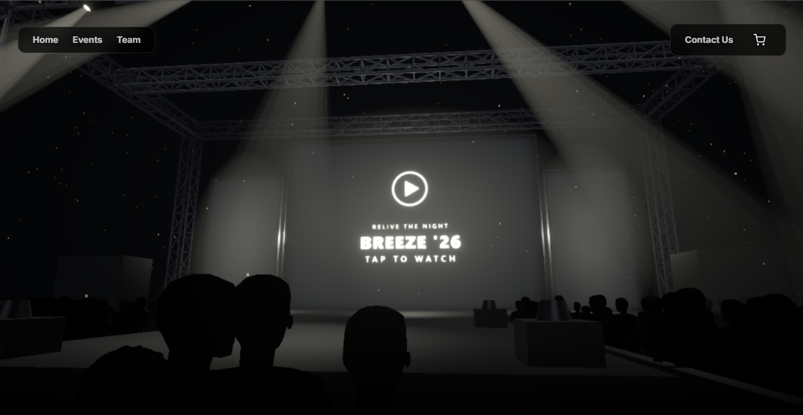
Historical/reference — 05-original-stage-near.png. Inspiration or older capture, not current implementation.Historical/reference — 09-desktop-aftermovie-viewing-area.png. Inspiration or older capture, not current implementation.Historical/reference — 18-desktop-constrained-stage-rear-quarry.png. Inspiration or older capture, not current implementation. Historical/reference — irregular-rock-opening.jpeg. Inspiration or older capture, not current implementation.Historical/reference — natural-rock-exit-graffiti.jpeg. Inspiration or older capture, not current implementation.
Historical/reference — irregular-rock-opening.jpeg. Inspiration or older capture, not current implementation.Historical/reference — natural-rock-exit-graffiti.jpeg. Inspiration or older capture, not current implementation. Historical/reference — quarry-open-sky-geometry.jpeg. Inspiration or older capture, not current implementation.Historical/reference — review-contact-sheet.jpg. Inspiration or older capture, not current implementation.Historical/reference — scaffold-sign-and-stage-composition.jpeg. Inspiration or older capture, not current implementation.
Historical/reference — quarry-open-sky-geometry.jpeg. Inspiration or older capture, not current implementation.Historical/reference — review-contact-sheet.jpg. Inspiration or older capture, not current implementation.Historical/reference — scaffold-sign-and-stage-composition.jpeg. Inspiration or older capture, not current implementation.